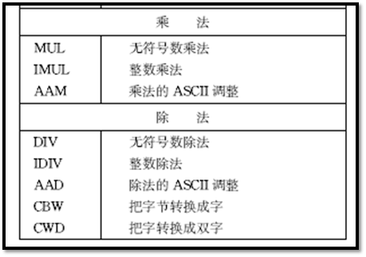
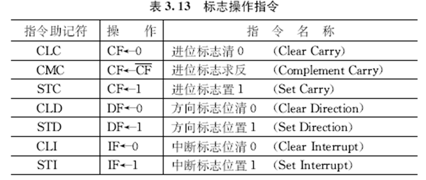

8086的指令共有六大类：数据传送指令、算术运算指令、逻辑运算和移位指令、字符串处理指令、控制转移指令、处理器控制指令。
1. 数据传送指令
1.1 通用数据传送指令
1. MOV 传送指令
指令格式：MOV 目的，源
指令功能：目的操作数←源操作数
MOV AL，‘B’ ；AL←将字符B的ASCII码(42H)MOV AX，DATA
MOV DS，AX由于DATA表示数据段的段址，是一个16位立即数，不能被直接送进DS，需要先送进另一个数据寄存器(如AX)，再传到DS中。
数据段：在汇编语言程序中，数据通常存放在数据段中。
例如，下面是某个程序的数据段：
DATA SEGMENT ；数据段开始
AREA1 DB 14H，3BH
AREA2 DB 3 DUP(0)
ARRAY DW 3100H，01A6H
STRING DB ‘GOOD’
DATA ENDS ；数据段结束- 数据段以段说明符SEGMENT开始，ENDS结束，DATA是数据段的段名。
- DB伪操作符用来定义字节变量。
- DW定义字变量，低字节在前，高字节在后。
- DUP复制操作符，前面的 “3”说明在存储器中保留3个字节单元，初值均为0。
- 汇编后，DATA被赋予具体的段地址，各变量将自偏移地址0000H开始依次存放，各符号地址也被赋予确定的值，等于它们在数据段中的偏移量。
- AREA1的偏移地址为0000H
- AREA2的偏移地址为0002H
- ARRAY的偏移地址为0005H
- 字符串‘GOOD’从0009H开始存放。
MOV DX，OFFSET ARRAY- 将ARRAY的偏移地址送到DX，其中，OFFSET为属性操作符，表示应把其后的符号地址的值(而不是内容)作为操作数。
- 若ARRAY的值如上图所示，则指令执行后，符号地址ARRAY的偏移量0005H被送到了DX中。
MOV AL，AREA1 ；AL←AREA1中的内容14H MOV AREA2，AL ；0002H单元←14H MOV AX，TABLE［BP］［DI］ ；将地址为 16×SS+BP+DI+TABLE 的字单元中的内容送进AX。
**2. 进栈指令PUSH**
指令格式： PUSH 源
指令功能： 将源操作数推入堆栈
- 源操作数可以是16位通用寄存器、段寄存器或存储器中的数据字，但不能是立即数。
- 执行PUSH操作后，使SP←SP-2，再把源操作数压入SP指示的位置上。
**3. 出栈指令POP**
指令格式： POP 目的
指令功能：把当前SP所指向的一个字送到目的操作数中
- 目的操作数可以是16位通用寄存器、段寄存器或存储单元，但不能是CS。
- 每执行一次出栈操作，SP←SP+2，SP向高地址方向移动，指向新的栈顶。

**4. 交换指令XCHG**
指令格式： XCHG 目的，源
指令功能： 源操作数和目的操作数相交换
- 交换可以在寄存器之间、寄存器与存储器之间进行，但段寄存器不能作为操作数，也不能直接交换两个存储单元中的内容。
设AX=2000H，DS=3000H，BX=1800H，(31A00H)=1995H，执行指令
` XCHG AX，［BX+200H］`
源操作数物理地址=3000×10H+1800H +200H=31A00H其中数据＝1995H
指令执行后，AX=1995H，(31A00H)=2000H
**5. 表转换指令XLAT**
指令格式：
XLAT 转换表 ；“转换表”为表格首地址
或
XLAT ；“转换表”可省略不写
指令功能： 将1个字节从一种代码转换成另一种代码
- 使用XLAT指令前，应建立一个表格，最多256个字节，且置：BX←转换表始址，AL← 表头地址到要找的某项间的位移量；
- 指令执行时，根据位移量从表中查到转换后的代码值，送入AL中。
### 1.2 输入输出指令
**1. IN 输入指令 (Input)**
指令格式：
1. IN AL，端口地址 ；AL←从8位端口读入1字节
或
IN AX，端口地址 ；AX←从16位端口读入1个字
2. IN AL，DX ；端口地址存放在DX中
或
IN AX，DX
- 格式1，端口地址(00~FFH)直接包含在IN指令里，共允许寻址256个端口。
- 当端口地址大于FFH时，必须用格式2寻址，即先将端口号送入DX，再执行输入操作，DX允许范围0000~ FFFFH。
```avrasm
IN AL，0F1H ；AL←从F1H端口读入1字节
；
IN AX，80H ；AL←80H端口内容
；AH←81H端口内容
；
MOV DX，310H ；端口地址310H先送入DX
IN AL，DX ；AL←310H端口内容IN指令中也可用符号表示地址。例如，要求从一个模/数(A/D) 转换器读入1字节数字量到AL中。
ATOD EQU 54H ；A/D转换器端口地址为54H
IN AL，ATOD ；将54H端口的内容读入AL中2. OUT 输出指令
指令格式：
- OUT 端口地址，AL ；8位端口←AL内容
或
OUT 端口地址，AX ；16位端口←AX内容 - OUT DX，AL ；DX=端口地址
或
OUT DX，AX
OUT 85H，AL ；85H端口←AL内容
；
MOV DX，0FF4H ；DX指向端口0FF4H
OUT DX，AL ；FF4H端口←AL内容
；
MOV DX，300H ；DX指向16位端口
OUT DX，AX ；300H端口←AL内容
；301H端口←AH内容1.3 地址目标传送指令
这是一类专用于传送地址码的指令，可以用来传送操作数的段地址和偏移地址。
1. LEA 取有效地址指令
指令格式： LEA 目的，源
指令功能： 取源操作数地址的偏移量，送到目的操作数
- 源操作数必须是存储单元，目的操作数是一个除段寄存器之外的16位寄存器。
设：SI=1000H，DS=5000H，(51000H)=1234H，指令执行结果如下：
LEA BX，［SI］
；[SI]的偏移地址为1000H，BX←1000H
MOV BX，［SI］
；偏移地址为1000 H单元的内容为1234H，
；指令执行后，BX←1234H 下面两条指令是等价的，它们都取TABLE的偏移地址，送到BX中。
LEA BX，TABLE
MOV BX，OFFSET TABLE2. LDS 将双字指针送到寄存器和DS指令
指令格式： LDS 目的，源
指令功能： 从源操作数指定的存储单元中，取出1个4字节地址指针，送进目的寄存器DS和指令中指定的目的寄存器中。
- 源操作数必须是存储单元，目的操作数必须是16位寄存器，常用SI寄存器，但不能用段寄存器。
设：DS=1200H，(12450H)=F346H，(12452H)=0A90H。执行指令： LDS SI，［450H］
结果: 存储单元前2字节内容为F346H ，SI←F346H，后2字节内容为0A90H ，DS←0A90H
3. LES 将双字指针送到寄存器和ES指令
指令格式： LES 目的，源
指令功能：与LDS指令的操作基本相同，但段寄存器为 ES，目的操作数常用DI。
设DS=0100H，BX=0020H，(01020H)=0300H，(01022H)=0500H
LES DI，［BX］
；存储单元前2字节内容为0300H ，SI←0300H，
；后2字节内容为0500H ，ES←0500H1.4 标志传送指令
1. LAHF 标志送到AH指令
指令格式： LAHF
指令功能： 把标志寄存器的SF、ZF、AF、PF和CF传送到AH寄存器的相应位。
2. SAHF AH送标志寄存器
指令格式： SAHF
指令功能： 把AH内容存入标志寄存器。指令功能与LAHF 的操作相反。
3. PUSHF 标志入栈指令
指令格式： PUSHF
指令功能： 把整个标志寄存器的内容推入堆栈，并使SP←SP-2
4. POPF 标志出栈指令
指令格式： POPF
指令功能： 把SP所指的一个字，传送给标志寄存器FLAGS，并使SP←SP+2。
2. 算术运算指令
- 算术运算指令可处理4种类型的数：
- 无符号二进制整数
- 带符号二进制整数
- 无符号压缩十进制整数(Packed Decimal)
- 无符号非压缩十进制整数(Unpacked Decimal)
- 二进制数可以是8位或16位，如果是带符号数，则用补码表示。
- 压缩十进制数 在一个字节中存放两个BCD码十进制数。
- 非压缩十进制数 低半字节存放一个十进制数，高半字节为全零。

2.1 加法指令
1. ADD 加法指令
指令格式： ADD 目的，源
指令功能：目的←源+目的
2. ADC 带进位的加法指令
指令格式： ADC 目的，源
指令功能： 目的←源+目的+CF
- 它们的源操作数可以是寄存器、存储器或立即数。
- 目的操作数只能用寄存器和存储单元，存储单元可以有表3.2中所示的24种表示方法。
- 源和目的操作数不能同时为存储器，而且它们的类型必须一致，即都是字节或字。
ADD AL，18H ；AL←AL+18H
ADC BL，CL ；BL←BL+CL+CF
ADC AX，DX ；AX←AX+DX+CF
ADD AL，COST［BX］
；将AL内容和物理地址=DS：(COST+BX)
；的存储字节相加，结果送到AL中
ADD COST［BX］，BL
；将BL与物理地址=DS：(COST+BX)的存储
；字节相加，结果留在该存储单元
;它们影响标志位： CF、OF、PF、SF、ZF和AF试用加法指令对两个8位16进制数5EH和3CH求和，分析指令执行后对标志位的影响。
MOV AL，5EH ；AL=5EH (94)
MOV BL，3CH ；BL=3CH (60)
ADD AL，BL ；结果AL=9AH3. INC 增量指令
指令格式： INC 目的
指令功能： 目的 ← 目的 + 1
- 目的操作数可以是通用寄存器或内存（存储单元）。指令执行后影响AF、OF、PF、SF和ZF，但进位标志CF 不受影响。
INC BL ；BL寄存器中内容增1 INC CX ；CX寄存器中内容增1 - 指令中只有一个操作数，如果是内存单元，则要用PTR操作符说明是字还是字节。
INC BYTE PTR［BX］
；内存字节单元内容增1
INC WORD PTR［BX］
；内存字单元内容增14. AAA 加法的ASCII调整指令
指令格式： AAA
指令功能： 用ADD或ADC指令对两个非压缩BCD数数或以ASCII码表示的十进制做加法后，结果在AL中，用此指令将AL中的结果进行调整。另外，若AF=1，表示有进位，则进到AH中。
非压缩十进制数的9可表示成0000 1001，5则为0000 0101，高4位均为0。设AH=0，若AL= BCD 9，BL= BCD 5，求两数之和。
求ASCII码表示的数9(39H)与5(35H)之和。设AH=0，则运算过程：
5. DAA 加法的十进制调整指令
指令格式： DAA
指令功能： 对两个压缩BCD数相加后的结果（已在AL中）进行调整。
注意：要对AL中高半字节和低半字节分别进行调整
若AL=BCD 38，BL=BCD 15，求两数之和.
若AL=BCD 88，BL=BCD 49，求两数之和。
注意：要对AL中高半字节和低半字节分别进行调整。
2.2 减法指令
1. SUB 减法指令
指令格式： SUB 目的， 源
指令功能：目的 ← 目的 - 源
SUB AX，BX ；AX←AX-BX
SUB DX，1850H ；DX←DX-1850H
SUB BL，［BX］
;BL中内容减去物理地址=DS：BX
;处的字节，结果存入BL2. SBB 带借位的减法指令
指令格式： SBB 目的，源
指令功能： 目的 ← 目的 - 源 - CF
SBB AL，CL ；AL←AL- CL-CF
```
SBB主要用于多字节减法中
**3. DEC 减量指令**
指令格式： DEC 目的
指令功能：目的 ← 目的 - 1
```avrasm
DEC BX ；BX←BX-1
DEC WORD PTR［BP］
；堆栈段中位于［BP］
；偏置处的字减14. NEG 取负指令
指令格式： NEG 目的
指令功能：目的 ← 0 - 目的
NEG AX
；将AX中的数取负(改变数的符号位)
NEG BYTE PTR［BX］
；对数据段中位于［BX］偏置处的字节取负5. CMP 比较指令
指令格式： CMP 目的，源
指令功能：目的 - 源 结果不回送到目的，仅反映在标志位上。
CMP AL，80H ；AL与80H作比较
CMP BX，DATA1 ；BX与数据段中偏移量
；为DATA1处的字比较- 比较指令主要用在希望比较两个数的大小，而又不破坏原操作数的场合。
6. AAS 减法的ASCII调整指令
指令格式： AAS
指令功能：在用SUB或SBB指令，对两个非压缩BCD数，或以ASCII码表示的十进制数相减后，对AL中所得结果进行调整，如有借位，则CF置1。
设AL=BCD 3，CL=BCD 8，求两数之差。很显然，结果为BCD 5，但要向高位借位。
7. DAS 减法的十进制调整指令
指令格式： DAS
指令功能： 在用SUB或SBB指令，对两个压缩BCD数相减（结果已存在AL中）后，进行调整。
- 同样，它也要对AL中高半字节和低半字节分别进行调整。
设AL=BCD 56，CL=BCD 98，求两数之差。
2.3 乘法指令
1. MUL 无符号数乘法指令
指令格式： MUL 源
指令功能： 把源操作数和累加器中的数，都当成无符号数，然后将两数相乘。
- 其中有一个操作数一定是累加器。
- 如果源操作数是1个字节，则 AX ← AL * 源
- 若源操作数是1个字， 则 (DX，AX) ← AX * 源
- 源操作数可以是寄存器或存储单元，不能是立即数
- 当源操作数是存储单元时，应在操作数前加BYTE或WORD，说明是字节还是字。
MUL DL ；AX←AL*DL
MUL CX ；(DX，AX)←AX*CX
MUL BYTE［SI］ ；AX←AL*(内存中某字节)，BYTE说明字节乘法
MUL WORD［BX］ ；(DX，AX)←AX*(内存中某字)，WORD说明字乘法- MUL指令执行后影响CF和OF标志。
- 如果结果的高半部分不为零，则CF、OF均置1。否则，CF、OF均清0。
- 通过测试这两个标志，可检测并去除结果中的无效前导零。
2. IMUL 整数乘法指令
指令格式： IMUL 源
指令功能：把源操作数和累加器中的数，都作为带符号数，进行相乘。
- 存放结果的方式与MUL相同，最后给乘积赋予正确的符号。
- 指令执行后，如果乘积的高半部分不是全0或全1，则置CF=1，OF=1。 若结果高半部分为全0或全1，则使CF=0，OF=0。这样来决定是否需要保存积的高半部分。
设AL=-28，BL=59，试计算它们的乘积。IMUL BL ；AX=F98CH= - 1652，CF=1，OF=1
3. AAM 乘法的ASCII调整指令
指令格式： AAM
指令功能：对存于AL的两个非压缩BCD数相乘的积进行调整，结果在AX中，高位放AH，低位在AL。
- 两个ASCII码数相乘前，应先屏蔽掉每个数字的高半字节。
- 调整过程： 把AL内容除以10，商放在AH中，余数在AL中。即
AH ← AL/10所得的商
AL ← AL/10所得的余数
指令执行后，将影响ZF、SF和PF。
求两个非压缩十进制数09和06之乘积。
MOV AL，09H ；置初值
MOV BL，06H
MUL BL ；AL←09与06之乘积36H
AAM ；调整得AH=05H(十位)，
；AL=04H(个位)最后, 可在AX中得到正确结果AX=0504H，即BCD数54。
如果AL和BL中分别存放9和6的ASCII码，则求两数之积时要用以下指令实现：
AND AL，0FH ；屏蔽高半字节
AND BL，0FH
MUL BL ；相乘
AAM ；调整如要将结果转换成ASCII码，可再用指令OR AX，3030H来实现，使AX=3534H。
2.4 除法指令
1. DIV 无符号数除法指令
指令格式： DIV 源
指令功能： 对两个无符号二进制数进行除法操作。
- 如果源操作数为字节，被除数必须放在AX中，并且有：
AL ← AX/源(字节)的商
AH ← AX/源(字节)的余数- 要是被除数只有8位，必须把它放在AL中，并将AH清0，然后相除。
- 若源操作数为字，被除数必须放在DX和AX中，并且有：
AX ← (DX，AX)/源(字)的商
DX ← (DX，AX)/源(字)的余数- 要是被除数只有16位，除数也是16位，则必须将16位被除数送入AX，再将DX清0，然后相除。
- 与被除数和除数一样，商和余数都是无符号数
2. IDIV 整数除法指令
指令格式： IDIV 源
指令功能：功能与DIV相同，但操作数都必须是带符号数，商和余数也都是带符号数，而且规定余数的符号和被除数的符号相同。
- 进行除法操作时，如果商超过了目标寄存器AL或AX所能存放数的范围，计算机会自动产生除法错中断，相当于执行了除数为0的运算，所得的商和余数都不确定。
两个无符号数7A86H和04H相除的商，应为1EA1H。若用DIV指令进行计算，即
MOV AX，7A86H
MOV BL，04H
DIV BL- 这时，由于BL中的除数04H为字节，而被除数为字，商1EA1H大于AL中能存放的最大无符号数FFH，结果将产生除法错误中断。
- 对于带符号数除法指令，字节操作时要求被除数为16位，字操作时要求被除数为32位。
- 如果被除数不满足这个条件，不能简单地将高位置0，而应该先用下面的符号扩展指令 (Sign Extension)将被除数转换成除法指令所要求的格式，再执行除法指令。
3. CBW 把字节转换为字指令
指令格式： CBW
指令功能： 把AL中字节的符号位扩充到AH的所有位，这时AH被称为是AL 的符号扩充。
- 如果AL中的D7=0，就将这个0扩展到AH中去，使AH=00H，即

- 若AL中的D7=1，则将这个1扩展到AH中去，使AH=FFH，即
- CBW指令执行后，不影响标志位。
4. CWD 把字转换成双字指令
指令格式： CWD
指令功能： 把AX中字的符号位扩充到DX寄存器的所有位中去。
- 若AX中的D15=0，则DX←0000H，即
- 若AX中的D15=1，则DX←FFFFH，即
编程求-38/3的商和余数。
MOV AL，11011010B ；被除数-38
MOV CH，00000011B ；除数+3
CBW ；将AL符号扩展到AH中
；使AX=1111 1111 1101 1010B
IDIV CH ；AX/CH
；AL=1111 0100B = -12 (商)
；AH=1111 1110B = -2(余数)5. AAD 除法的ASCII调整指令
指令格式：AAD
指令功能：在做除法前把BCD码转换成二进制数。
- 前面介绍的调整指令，都是在用加法、减法和乘法指令后，紧跟着用一条AAA、AAS或AAM指令，对运算结果进行调整。
- 而除法的ASCII调整指令不同，它是在除法之前进行的。
- 在把AX中的两位非压缩BCD数除以一个非压缩BCD数之前，先用AAD指令，把AX中的被除数调整成二进制数，并存入AL，然后才能用DIV指令进行运算。调整的过程为：
AL←AH×10+AL
AH←00 - 本指令根据AL寄存器的结果影响SF、ZF和PF。
3. 逻辑运算符和移位指令
3.1 逻辑运算指令
1. NOT 取反指令
指令格式： NOT 目的
指令功能：目的←目的取反
- 目的操作数可以是8位或16位寄存器或存储器，对存
储器操作数要说明类型。
NOT AX ；AX←AX取反
NOT BL ；BL←BL取反
NOT BYTE PTR［BX］
；对存储器字节单元内容取反后送回该单元 2. AND 逻辑与指令
指令格式： AND 目的，源
指令功能： 目的←目的∧源
- 主要用于使操作数的某些位保留(和“1”相与)，而使某些位清除(和“0”相与)。
设AX中是数字5和8的ASCII码，即AX=3538H，将它们转换成BCD码，结果仍放回AX。指令如下：
AND AX，0F0FH ；AX←0508H。屏蔽高4位，
；截得低4位3. OR 逻辑或指令
指令格式： OR 目的，源
指令功能： 目的←目的∨源
- 它主要用于使操作数的某些位保留(和“0”相或)，而使某些位置1(和“1”相或)。
设AX中存有两个BCD数0508H，要将它们分别转换成ASCII码，结果仍在 AX中。可用如下指令实现：OR AX，3030H ；AX←3538H
4. XOR 异或操作指令
指令格式： XOR 目的，源
指令功能： 对两个操作数进行按位逻辑异或运算，结果送回目的操作数，即目的←目的xor源
- 用于使操作数的某些位保留(和“0”相异或)，而使某些位取反(和“1”相异或)。
若AL中存有某外设端口的状态信息，其中D1位控制扬声器发声，要求该位在0和1之间来回变化，原来是1变成0，原来是0变成1，其余各位保留不变。可用以下指令实现：XOR AL，00000010B
5. TEST 测试指令
指令格式： TEST 目的，源
指令功能： 目的∧源，并修改标志位，但不回送结果
- 它常用在要检测某些条件是否满足，但又不希望改变原有操作数的情况下。
设AL寄存器中存有报警标志。若D7=1，表示温度报警，程序要转到温度报警处理程序T_ALARM; D6=1，则转压力报警程序P_ALARM。
TEST AL，80H ；查AL的D7=1?
JNZ T_ALARM ；是1(非零)，则转
；温度报警程序
TEST AL，40H ；D7=0，D6=1?
JNZ P_ALARM ；是1，转压力报警其中，JNZ为条件转移指令，表示结果非0(ZF=1)则转移。
3.2 算术逻辑移位指令
可对寄存器或存储器中的字或字节的各位进行算术移位或逻辑移位，移动的次数由指令中的计数值决定。
1. SAL 算术左移指令
指令格式：SAL 目的，计数值
2. SHL 逻辑左移指令
指令格式：SHL 目的，计数值
指令功能：以上两条指令的功能完全相同。
- 均将目的操作数的各位左移，每移一次，最低位LSB补0，最高位MSB进标志位CF。移动一次，相当于将目的操作数乘以2。
- 计数值表示移位次数，可以是1。若大于1，则用CL存放，并要事先将次数存入CL。
- 移位次数最多为31(即00011111B)。
MOV AH，00000110B；AH=06H
SAL AH，1 ；将AH内容左移一位后，
；AH=0CH
MOV CL，03H ；CL←移位次数3
SHL DI，CL ；将DI内容左移3次
SAL BYTE PTR［BX］，1
；将内存单元字节左移1位3. SHR 逻辑右移指令
指令格式：SHR 目的，计数值
指令功能：使目的操作数各位右移，每移一次，最低位进
入CF，最高位补0。
- 右移次数由计数值决定，同SAL/SHL指令一样。
- 若目的操作数为无符号数，每右移一次，使目的操作数除以2。
用右移的方法做除法133/8=16…5，即：
MOV AL， 10000101B ；AL=133
MOV CL， 03H ；CL=移位次数
SHR AL， CL ；右移3次，AL=10H，余数5丢失4. SAR 算术右移指令
指令格式： SAR目的，计数值
指令功能：每移位一次，最低位进入CF，但最高位(即符号位)保持不变，而不是补0。相当于对带符号数进行除2操作。
用SAR指令计算-128/8=-16的程序段如下：
MOV AL，10000000B ；AL= -128
MOV CL，03H ；右移次数为3
SAR AL，CL ；算术右移3次后，
；AL=0F0H= -163.3 循环移位指令
算术逻辑移位指令，移出的操作数数位均丢失。循环移位指令则把数位从操作数的一端移到其另一端，从操作数中移走的位不会丢失。
1. ROL 循环左移指令
指令格式： ROL 目的，计数值
2. ROR 循环右移指令
指令格式： ROR 目的，计数值
3. RCL 通过进位位循环左移
指令格式： RCL 目的，计数值

4. RCR 通过进位位循环右移
指令格式： RCR 目的，计数值
- 目的操作数可以是8/16位的寄存器操作数或内存操作数，计数值含义同上，即1或由CL指定。
- ROL和ROR为小循环移位指令，没有把CF包含在循环中；RCL和RCR为大循环指令，把 CF作为整个循环的一部分参加循环移位。
- CF的值由最后一次被移出的值决定。
ROL BX，CL
；将BX中的数，不带进位位左移规定次数
ROR WORD PTR［SI］，1
；将内存单元的字，不带进位右移1次设 CF=1，AL=1011 0100B
若执行指令 ROL AL，1
则 AL=0110 1001B，CF=1，OF=1；
若执行指令 ROR AL，1
则 AL=0101 1010B，CF=0，OF=1；
若执行指令 RCR AL，1
则 AL=1101 1010B，CF=0，OF=0；
若执行指令 MOV CL，3 和 RCL AL，CL
则 AL=1010 0110B，CF=1，OF不确定。4. 字符串处理指令
- 字符串是指一系列存放在存储器中的字或字节数据。
- 使用字符串操作指令时，可用指令中的源串和目的串名(即操作数)来表明是字节还是字，也可在指令助记符后加B说明是字节，
- 加W说明是字操作，每种指令就都有3种格式。
字符串指令执行时，必须遵守以下的隐含约定：
- 源串位于数据段中，源串字符的始址(或末址)为DS:SI。
- 目的串位于附加段中，目的串字符的始址(或末址)为ES:DI
- 每执行一次字符串指令，指针SI和DI会自动修改，指向下一待操作单元。
- DF标志控制字符串处理的方向：
- DF＝0递增。执行一次字节串操作，SI、DI各+1；字串操作，SI和DI各+2；
- DF=1递减。执行一次字节串操作，SI、DI各-1；字串操作，SI和DI各-2。
- STD指令使DF=1，CLD指令使DF=0。
- CX=要处理的字符串长度(字节或字数)。
- 为加快串运算指令的执行速度，可在基本指令前加重复前缀，使数据串指令重复执行。每重复执行一次，SI和DI都根据方向标志自动修改，CX的值则自动减1。
- 能与基本指令配合使用的重复前缀有：
- REP 无条件重复
(Repeat) - REPE/REPZ 相等/结果为零则重复
(Repeat while Equal/Zero) - REPNE/REPNZ 不相等/结果非零则重复
(Repeat while Not Equal/Not Zero)
- REP 无条件重复
4.1 MOVS字符串传送指令
指令格式： MOVS 目的串， 源串
指令功能：把源串中的一个字节或字，传送目的串中
且自动修改指针SI和DI。
- 利用MOVS指令，能很方便地将数据从内存的某一地址(源地址)传送到另一个地址(目的地址)，还能自动修改源和目的地址。若使用重复前缀，可用一条指令传送一批数据。
要求把数据段中以SRC-MESS为偏移地址的一串字符“HELLO!”，传送到附加段中以NEW-LOC开始的单元中。实现该操作的程序如下：
4.2 CMPS 字符串比较指令
指令格式： CMPS 目的串， 源串
指令功能：将源串中数据减去目的串数据，但不改变两数据串的原始值，结果反映在标志位上。操作后源串和目的串指针会自动修改。
- 常用此指令来比较两个串是否相同，并由其后的条件转移指令，根据CMPS执行后的标志位值，决定程序的转向。
CMPS指令前可加重复前缀, 下面每两条指令功能相同:
REPE CMPS ；若CX≠0(未比完)和
REPZ CMPS ；ZF＝1(两串相等)，则重复
REPNE CMPS ；若CX≠0(串没有结束)和串不相等
REPNZ CMPS ；(ZF=0)，则重复比较。比较两个字符串，一个是在程序中设定的口令串PASSWORD，另一个是从键盘输入的字符串IN-WORD，若输入串与口令串相同，程序开始执行。否则程序驱动扬声器发声，警告用户口令不符，拒绝往下执行。这可以用CMPS指令来实现，有关程序段如下：
DATA SEGMENT ；数据段
PASSWORD DB ‘8086 CPUI’ ；口令串
IN_WORD DB ‘8088 CPU’ ；从键盘输入的串
COUNT EQU 8 ；串长度
DATA ENDS
CODE SEGMENT ；代码段
ASSUME DS：DATA，ES：DATA
…
LEA SI，PASSWORD ；源串指针
LEA DI，IN_WORD ；目的串指针
MOV CX，COUNT ；串长度
CLD ；地址增量
REPZ CMPSB ；CX≠0且串相等时重复比较
JNE SOUND ；若不相等，转发声程序
OK： … ；比完且相等，往下执行
…
SOUND： … ；使PC机扬声器发声
… ；并退出
CODE ENDS4.3 SCAS 字符串扫描指令
指令格式： SCAS 目的串
指令功能：从AL(字节操作)或AX(字操作)寄存器的内容，减去ES:DI为指针的目的串元素，结果反映在标志位上，但不改变源操作数。串操作后目的串指针DI会自动修改。
- 利用SCAS指令，可在内存中搜索所需要的数据（关键字）。指令执行前，必须事先将它存在AL(字节)或AX(字)中。
- SCAS指令前也可加重复前缀。
在某字符串中搜寻字符A。若有，搜索次数送到BX；若无，将BX清0。设字符串始址STRING的偏址为0，字符串长度为CX。程序段如下：
MOV DI，OFFSET STRING ；DI=字符串偏移地址
MOV CX，COUNT ；CX=字符串长度
MOV AL，‘A’ ；AL=关键字A的ASCII码
CLD ；清方向标志
REPNE SCASB ；CX≠0(没查完)和
；ZF=0(不相等)时重复
JZ FIND ；若ZF=1，已搜到，转出
MOV DI，0 ；若ZF=0，没搜到，DI←0
FIND：
MOV BX，DI ；BX←搜索次数
HLT ；停机4.4 LODS 数据串装入指令
指令格式： LODS 源串
指令功能：把数据段中以SI作为指针的串元素，传
送到AL(字节操作)或AX(字操作)中，同时修改SI。
- 为该指令加重复前缀没有意义。因为每重复传送一次数据，累加器中的内容就被改写，执行重复传送操作后，只能保留最后写入的那个数据。
4.5 STOS 数据串存储指令
指令格式： STOS 目的串
指令功能：将累加器AL或AX中的一个字节或字，传送到以ES:DI为目标指针的目的串中，同时修改DI，以指向串中的下一个单元。
- STOS指令与REP重复前缀连用，即执行指令REP STOS，能方便地用累加器中的一个常数，对一个数据串进行初始化。例如，初始化为全0的串。
数据段中有个数据块， 存有8位带符号数，始址
BLOCK，要求将正、负数分开，正数送到附加段中始
址为PLUS_DATA的缓冲区，负数送到附加段中始址为
MINUS_DATA的缓冲区。
数据块可看成一个数据串，用SI作源串指针，DI和BX作正、负数目的缓冲区指针，CX控制循环次数。程序段如下：
START：
MOV SI，OFFSET BLOCK ；SI为源串指针
MOV DI，OFFSET PLUS_DATA
；DI为正数目的区指针
MOV BX，OFFSET MINUS_DATA
；BX为负数目的区指针
MOV CX，COUNT ；CX放循环次数
CLD
GOON：
LODS BLOCK ；AL←取源串的一个字节
TEST AL，80H ；是负数?
JNZ MINUS ；是，转MINUS
STOSB ；非负数，将字节送正数区
JMP AGAIN ；处理下一个字节
MINUS：
XCHG BX，DI ；交换正负数指针
STOSB ；负数送入负数区
XCHG BX，DI ；恢复正负数指针
AGAIN：
DEC CX ；次数减1
JNZ GOON ；未处理完，继续传送
HLT ；已完，停机- 程序中，正负数的存储均使用STOSB指令，该指令必须以SI为源指针，DI为目的指针。
- 但存储负数时，负数区的目的指针在BX中，因此要用XCHG指令将BX内容送进DI，让DI 指向负数区，同时也把DI中的正数区目的指针保护起来。
- 执行STOSB指令后，再用XCHG指令将BX和DI交换回来，以便下次转回GOON标号后，LODS指令仍能正确执行。
5. 控制转移指令
- 通常，程序中的指令都是顺序地逐条执行的，执行顺序由CS和IP决定，每取出一条指令，指令指针IP自动进行调整，指向下一个存储单元。
- 利用控制转移指令可以改变CS和IP的值，从而改变指令的执行顺序。8086提供了5类转移指令，如表3.9。
5.1 无条件转移和过程调用指令
1. JMP 无条件转移指令
指令格式： JMP 目的
指令功能： 无条件地转移到目的地址去执行。
这类指令又分成两种类型：
- 段内转移或近(NEAR)转移。转移指令的目的地址和JMP指令在同一代码段中，转移时仅改变IP的内容，段地址CS的值不变。
- 段间转移，又称远(FAR)转移。转移指令的目的地址和JMP指令不在同一段中，转移时，CS和IP的值都要改变，程序要转移到另一个代码段去执行。
就转移地址提供的方式而言，又可分为两种方式：
- 直接转移。在指令码中直接给出转移的目的地址，目的操作数用一个标号来表示。它又可分为段内直接转移和段间直接转移。
- 间接转移。目的地址包含在某个16位寄存器或存储单元中，CPU必须根据寄存器或存储器寻址方式，间接地求出转移地址。同样，这种转移类型又可分为段内间接转移和段间间接转移。
所以无条件转移指令可分成段内直接转移、段内间接转移、段间直接转移和段间间接转移四种不同类型和方式，如表3.10所示。
1）段内直接转移指令
指令格式：
JMP SHORT 标号
JMP NEAR PTR 标号 (或JMP 标号)
- 段内相对转移指令，目的操作数均用标号表示。
- 转向的有效地址=IP+8位/16位位移量(DISP)。
- 若转移范围在-128~+127字节内，称为短转移，指令中只需要用8位位移量，在标号前加说明符SHORT。
- 若位移量是16位，称为近转移，目的地址与当前IP的距离在-32768~+32767字节之间。可加说明符NEAR PTR，也可省略。这类指令用得最多。
给出一个含有一条无条件转移指令的简单程序的
列表文件，它是由汇编语言源程序经汇编程序翻译后产
生的。即
2）段内间接转移指令
转向的16位地址存放在一个16位寄存器或字存储器单元中。
- 用寄存器间接寻址的段内转移指令，转向的地址存放在寄存器中，执行操作：IP←寄存器内容。
JMP BX
若指令执行前，BX=4500H ；
指令执行时，IP←4500H，程序转到代码段内偏移地址为4500H处执行。
- 用存储器间接寻址的段内转移指令，先计算出存储单元的物理地址，再从中取一个字送到IP。即IP←字存储单元内容。
JMP WORD PTR 5［BX］ ；WORD PTR说明是字操作
设指令执行前
DS=2000H, BX=100H, (20105H)=4F0H；
则指令执行后
IP=(20000H+100H+5H) = (20105H)=4F0H，
转到段内IP=4F0H处执行。
3）段间直接(远)转移指令
指令中用远标号直接给出转向的CS:IP，程序从一个
代码段转到另一个代码段。
JMP FAR PTR PROG_F ；FAR PTR说明PROG_F为远标号
指令执行的操作：
IP← PROG_F的段内偏移量
CS←PROG_F所在段的段地址
设标号PROG_F的逻辑地址=3500H：080AH，则：
指令执行后，IP=080AH，CS=3500H，程序转到
3500：080AH处执行。
4）段间间接转移指令
操作数为存储器，要转移的目的地址CS:IP存放
在存储器中。需加说明符DWORD PTR，表示转向
地址需取双字。
JMP DWORD PTR［SI+0125H］
设指令执行前，CS=1200H，IP=05H，DS=2500H，
SI=1300H；
内存单元(26425H)=4500H，(26427H)=32F0H，指令
中的位移量DISP=0125H。
过程如图：
2. 过程调用和返回指令
- 把某些能完成特定功能又常用的程序段，编写成独立模块，称为过程(Procedure) 或 **子程序(Subroutine)**。
- 在主程序中用CALL语句调用这些过程，格式为：
CALL 过程名 - 过程以
PROC开头，ENDP结束。过程中要安排一条返回指令RET，过程执行完后能正确返回主程序。 - 若在过程运行中又调用另一过程，称为过程嵌套。
- 主程序和过程在同一代码段，称为近调用，不在同一段则称为远调用。
- 过程调用的寻址方式与转移指令类似，但没有段内短调用。由于调用结束后需返回原程序继续运行，要执行保护和恢复返址操作，比转移复杂。
CALL指令分两步执行：
- 第一步：返址入栈，将CALL下面指令的地址推入堆栈
- 近调用执行的操作：SP←SP-2，IP入栈
- 远调用执行的操作：SP←SP-2，CS入栈
SP←SP-2，IP入栈
- 第二步：转到子程序入口执行相应的子程序。入口地址由CALL指令的目的操作数提供，寻址方法与JMP指令类似。
- 执行过程中的RET指令时，从栈中弹出返址，使程序返回主程序继续执行。也有两种情况：
- 从近过程返回，从栈中弹出1个字→IP，并且使SP←SP+2。
- 从远过程返回，先从栈中弹出1个字→IP，并且使SP←SP+2；再弹出1个字→CS，并使SP←SP+2。
- 执行过程中的RET指令时，从栈中弹出返址，使程序返回主程序继续执行。也有两种情况：
CALL和RET指令有4种寻址方式。
1）段内直接调用和返回
CALL PROG-N ；PROG-N是一个近标号
该指令含3个字节，编码格式为：
设调用前：CS：IP=2000H：1050H，SS：SP=5000H：0100H，PROG-N与CALL指令之间的字节距离等于1234H (即DISP=1234H)。
则执行CALL指令的过程：
- SP←SP-2
即新的SP=0100H-2=00FEH - 返回地址的IP入栈
由于存放CALL指令的内存首地址为CS：IP=2000：1050H，该指令占3字节，所以返回地址为2000：1053H，即IP=1053H。于是1053H被推入堆栈。 - 根据当前IP值和位移量DISP计算出新的IP值，作为子程序的入口地址，即
IP = IP+DISP = 1053H+1234H = 2287H - 程序转到本代码段中偏移地址为2287H处执行
RET指令的寻址方式与CALL一样，在本例中也是段内直接调用。执行过程如下：
- IP←(SP和SP+1)单元内容
即返址IP=1053H从栈中弹出 - SP←SP+2
SP=00FEH+2=0100H，即恢复原SP
结果，返回CALL下面的那条指令，即从2000：1053处继续执行程序。
2）段内间接调用和返回
下面是两条段内间接调用指令的例子，返址在寄存器或内存中。
CALL BX
CALL WORD PTR［BX+SI］
它们执行的操作分三步，前两步与直接调用相同，第三步不同，具体为：
- SP←SP-2
- IP入栈
- IP←EA，计算出目的地址的有效地址EA，送入IP，以此转移。
设：DS=1000H, BX=200H, SI=300H, (10500H)=3210H
CALL BX
转移地址在BX中，此调用指令执行后，IP←0200H，转到段内偏移地址为0200H处执行。
CALL WORD PTR［BX+SI］
子程序入口地址在内存字单元中，其值为 (16×DS+BX+SI) = (10000H+0200H+0300H) = (10500H) = 3210H， 即EA=3210H
此指令执行后，IP←3210H，转到段内偏移地址为3210H 处执行。
对应的RET指令执行的操作与段内直接过程的返回指令类似。
3）段间直接调用
CALL FAR PTR PROG_F ；PROG_F是一个远标，该指令含5个字节，编码格式为：
设调用前：CS：IP=1000：205AH，SS：SP=2500：0050H，标号PROG-F所在单元的地址指针CS：IP=3000：0500H。
存放CALL指令的内存首址为1000：205AH，由于该指令长度为5个字节，所以返回地址应为1000：205FH。
执行远调用CALL指令的过程具体为：
- SP←SP-2 即SP=0050H-2=004EH
- CS入栈 即CS=1000H入栈
- SP←SP-2 即SP←004CH
- IP入栈 即IP=205FH入栈
- 转子程序入口
- 将PROG-F的段地址和偏移地址送CS：IP即CS←3000H,IP←0500H
- 执行子程序PROG-F
过程PROG-F中的RET指令的寻址方式也是段间直接调用，返回时执行的操作为：
- SP←SP+2 即SP←004C+2=004EH
- IP←栈中内容 IP←205FH
- SP←SP+2 SP←004EH+2=0050H
- CS←栈中内容 CS←1000H
所以程序转返回地址CS：IP=1000：205FH处执行。
4）段间间接调用
操作数必须是存储单元，从该单元开始存放的双字表示过程的入口地址，指令中用DWORD PTR说明是对存储单元进行双字操作。
CALL DWORD PTR［BX
设调用前，DS=1000H，BX=200H，(10200H)=31F4H，(10202)=5200H。
执行时先将返址的CS：IP推入堆栈，再转向过程入口。
指令中操作数地址=DS×16+BX=10000H+200H=10200H从中取得的双字就是过程入口地址，即：
IP←(10200H) 即IP=31F4H
CS←(10202H) 即CS=5200H
8086还有另一种带参数的返回指令，形式为：RET n
n称为弹出值，它让CPU在弹出返回地址后，再从堆栈中弹出n个字节的数据，也就是让SP再加上n。N可以是0000~FFFFH范围内的任何一个偶数。
例如，指令RET 8，表示从堆栈中弹出地址后，再使SP的值加上8。
5.2 条件转移指令
- 将上条指令执行后的状态标志，作为测试条件，来决定是否转移。当条件成立，程序转向指令中给出的目的地址去执行；否则，仍顺序执行。
- 条件转移均为段内短转移，转移指令与目的地址必须在同一代码段中。转移距离范围为-128～+127字节。8位偏移量需用符号扩展法扩展到16位后才能与IP相加。
- 在指令中，目的地址均用标号表示，指令格式：
条件操作符 标号 - 条件转移指令共18条，归类成直接标志转移和间接标志转移两大类。
1. 直接标志转移指令
助记符中直接给出标志状态测试条件，以CF、ZF、SF、OF和PF等5个标志的10种状态为判断条件，形成10条指令，如表3.11。有的指令有两种助记符，代表同样的指令，如JZ/JE。
求AL和BL中的两数之和，若有进位，则AH置1，否则AH清0。
ADD AL，BL ；两数相加
JC NEXT ；若有进位，转NEXT
MOV AH，0 ；无进位，AH清0
JMP EXIT ；往下执行
NEXT：
MOV AH，1 ；有进位，AH置1
EXIT： … ；程序继续进行2. 间接标志转移
- 不在指令助记符中直接给出标志状态位的测试条件，但仍以某一个或几个标志的状态组合为测试条件，若条件成立则转移，否则顺序往下执行。
- 间接标志转移指令共有8条，列于表3.12中。每条指令都有两种不同的助记符。
- 在无符号数比较测试指令中，指令助记符中的“A”是英文Above的缩写，表示“高于”之意，“B”是英文Below的缩写，表示“低于”之意。
设 AL=F0H，BL=35H，执行指令:
CMP AL，BL ；AL-BL
JAE NEXT ；AL大于等于BL，则转到NEXT- JAE/JNB根据CF标志是否为0决定转移。若CF=0，即无进位，则转移，这与直接标志转移指令中的JNC功能完全一样。
- 同样，JB/JNAE与JC指令的功能相同。
- 带符号数进行比较时，不能仅根据SF或OF标志来判定，而要将它们组合起来考虑。指令助记符中，“G”(Great than)表示“大于”，“L”(Less than)表示“小于”。
设某学生的英语成绩已存放在AL中，如低于60分打印F(FAIL)；高于或等于85分，打印G(GOOD)；在60~84分之间，打印P (PASS)。程序为
CMP AL，60 ；与60分比较
JB FAIL ；<60，转FAIL
CMP AL，85 ；≥60，与85分比较
JAE GOOD ；≥85，转GOOD
MOV AL，‘P’ ；其它，将AL←‘P’
JMP PRINT ；转打印程序
FAIL：
MOV AL，‘F’ ；AL←‘F’
JMP PRINT ；转打印程序
GOOD：
MOV AL，‘G’ ；AL←‘G’
PRINT： … ；打印存在AL中的字符设某温度控制系统中，从温度传感器输入一个8位二进制摄氏温度值。当温度低于100℃时，打开加热器；温度升到100℃或以上时，关闭加热器。
温度传感器端口号为320H，控制加热器的输出信号连到端口321H的最低有效位，当它置1加热器打开，清0
则关闭。实现上述温度控制的程序：
GET-TEMP：
MOV DX，320H ；DX指向温度输入端口
IN AL，DX ；读取温度值
CMP AL，100 ；与100 ℃比较
JB HEAT_ON ；<100 ℃，加热
JMP HEAT_OFF ；≥100 ℃，停止加热
HEAT-ON：
MOV AL，01H ；D0位置1，加热
MOV DX，321H ；加热器口地址
OUT DX，AL ；打开加热器
JMP GET_TEMP ；继续检测温度
HEAT-OFF：
MOV AL，00 ；D0位置0，停止加热
MOV DX，321H
OUT DX，AL ；关闭加热器
… ；进行其它处理在首地址为TABLE的10个内存字节单元中, 存放了10个带符号数，统计其中正数、负数和零的个数，结果存入PLUS、NEGT和ZERO单元。
TABLE DB 01H，80H，0F5H，32H，86H
DB 74H，49H，0AFH，25H，40H
PLUS DB 0 ；存正数个数
NEGT DB 0 ；存负数个数
ZERO DB 0 ；存0的个数
…
MOV CX，10 ；数据总数
MOV BX，0 ；BX清0
AGAIN：
CMP TABLE［BX］，0 ；取一个数与0比
JGE GRET_EQ ；≥0，转GRET_EQ
INC NEGT ；<0，负数个数加1
JMP NEXT ；往下执行
GRET-EQ：
JG P-INC ；>0，转P-INC
INC ZERO ；=0，零个数加1
JMP NEXT ；往下执行
P-INC：
INC PLUS ；正数个数加1
NEXT：
INC BX ；数据地址指针加1
DEC CX ；数据计数器减1
JNZ AGAIN ；未完，继续统计5.3 循环控制指令
- 是一组增强型条件转移指令，用来控制程序段的重复执行，重复次数由CX中的内容决定，转移目标都是短标号，偏移量都是负值，即只能向前转移。均不影响任何标志。
1. LOOP循环指令
指令格式： LOOP 短标号
指令功能：重复执行一系列指令。
- 重复次数放在CX中，执行一次指令，CX1。如减1后CX≠0，转到指令给定的标号处继续循环；CX=0，结束循环，转去执行LOOP指令后的那条指令。
- 一条LOOP指令相当于执行以下两条指令：
DEC CX
JNZ 标号
商店里有8种商品，价格为83元，76元，65元，84元，71元，49元，62元和58元，要将每种商品提价7元，编程计算每种商品提价后的价格。
先将商品原价按BCD码形式，依次存放在以OLD开始的8个存储单元中，新价格存放进以NEW开始的8个单 元，然后用LOOP指令来实现8次循环。即
OLD DB 83H，76H，65H，84H
DB 71H，49H，62H，58H
NEW DB 8 DUP(?)
…
MOV CX，08H ；共8种商品
MOV BX，00H ；BX作指针，初值为0
NEXT：
MOV AL，OLD［BX］ ；读入一个商品的原价
ADD AL，7 ；加上提价因子
DAA ；调整为十进制数
MOV NEW［BX］，AL ；存放结果
INC BX ；地址指针加1
LOOP NEXT ；未加满8次，继续循环
… ；已加完8次循环操作也可以只含一条指令，即LOOP指令自身，这样的程序段常用来实现延时。
MOV CX，10 ；循环次数为10
DELAY：
LOOP DELAY ；本指令重复执行10次2. LOOPE/LOOPZ 相等或结果为0时循环
指令格式： LOOPE 标号 或 LOOPZ 标号
指令功能： LOOPE是相等时循环，LOOPZ是结果为0时
循环。
- 它们能完成相同功能，具有不同助记符，用来控制重复执行一组指令。
- 指令执行前，先将重复次数送入CX，每执行一次CX-1，若-1后CX≠0和ZF=1，则转到指令指定的标号处重复执行；若CX=0或ZF=0，便退出循环，执行本指令后的那条指令。
设1个50字节组成的数组存在ARRAY开始的内存中，测试数组中的元素，若为0，且不是最后1个，便继续进行下个元素的测试，直到找到第一个非零元素或查完了为止。
ARRAY DB ××，××，… ；含50个元素的数组
MOV BX， OFFSET ARRAY
；BX指向数组开始单元
DEC BX ；指针-1
MOV CX， 50 ；CX=元素个数
NEXT：
INC BX ；指向数组的下个元素
CMP ［BX］， 00H ；数组元素与0比较
LOOPE NEXT ；若元素为0和CX≠0，循环
… ；否则，结束查找3. LOOPNE/LOOPNZ 不相等或结果不为0循环
指令格式： LOOPNE 标号 或 LOOPNZ 标号
指令功能：LOOPNE是不相等循环，而LOOPNZ是结果ZF≠1循环，它们也是一对功能相同但形式不一样的指令。
- 指令执行前，应将重复次数送入CX，每执行一次，CX自动-1，若-1后CX≠0和ZF=0，则转移到标号所指定的地址重复执行；若CX=0或ZF=1，则退出循环，顺序执行下一条指令。
设一个由17个字符组成的字符串存放在以STRING开始的内存中，查找字符串中是否包含空格符。若没有找到空格符和尚未查完，则继续查找，直到找到第一个空格符或查完了, 才退出循环。
STRING DB ‘Personal Computer’ ；字符串
MOV BX，OFFSET STRING ；BX指向字符串始址
DEC BX ；BX-1
MOV CX，17 ；CX=字符串长度
NEXT：
INC BX ；指向下一个字符
CMP ［BX］，20H ；字符串元素与空格比较
LOOPNE NEXT ；若不是空格和CX≠0，循环
… ；找到空格或CX已为04. JCXZ 若CX为0跳转
指令格式： JCXZ 标号
指令功能：若CX寄存器为0，则转移到指令中标号所指定的地址处，否则将往下顺序执行。
- 它不对CX寄存器进行自动减1操作。
- 这条指令用在循环程序开始处。为了使程序跳过循环，只要事先把CX 寄存器清0。
5.4 中断指令
计算机在执行正常程序过程中，由于某些事件发生，需要暂时中止当前程序的运行，转到中断服务程序去为临时发生的事件服务。中断服务程序执行完，又返回正常程序继续运行。此过程称为中断。
8086的中断有两种：
- 第一种，外部中断或硬件中断，它们从8086的不可屏蔽中断
引脚NMI 或可屏蔽中断引脚INTR引入。 - 第二种，内部中断或软中断，是为解决CPU在运行中发生意
的外情况或是为便于对程序调试而设置的。 - 此外，也可在程序中安排一条中断指令INT n，利用它直接产生8086的内部中断。
1. INT n 软件中断指令
- 软件中断指令，n为中断类型号，范围0~255。可安排在程序的任何位置上。
2. INTO 溢出中断指令
- 当带符号数进行算术运算后，若OF=1，则可由INTO指令产生类型为4的中断; 若OF=0，则INTO指令不产生中断。
- 为此，在带符号数进行加减法运算之后，必须安排一条INTO指令，一旦溢出就能及时向CPU提出中断请求，CPU可做出相应的处理。
3. IRET
- 中断返回指令IRET。被安排在中断服务程序的出口处，指令执行后，从堆栈中依次弹出程序断点和FLAGS的内容，使CPU继续执行原来被打断的程序。
6. 处理器控制指令
6.1 标志操作指令
- 8086提供一组标志操作指令，可直接对CF，DF和IF标志位进行设置或清除等操作，但不包含TF标志。

1. CLC，CMC和STC
利用CLC指令，使进位标志CF清0，CMC指令使CF取反，STC指令则使CF置1。
2. CLD和STD
方向标志DF在执行字符串操作指令时用来决定地址的修改方向，CLD指令使DF清0，而STD指令则使DF置1。
3. CLI和STI
中断允许标志IF决定CPU能否响应可屏蔽中断请求，指令CLI使IF清0，禁止CPU响应这类中断。STI使IF置1，允许CPU响应。
6.2 外部同步指令
1. ESC 换码指令 (Escape)
指令格式：ESC 外部操作码，源操作数
指令功能：换码指令实现8086对8087协处理器的控制。
2. WAIT 等待指令 (Wait)
通常跟在ESC指令之后。ESC指令执行后，8086 CPU处于等待状态，不断检测TEST引脚，若为高电平，则重复执行WAIT指令，处理器处于等待状态；如变为低电平，便退出等待状态，执行下条指令。
3. LOCK 封锁总线指令 (Lock Bus)
可加在任何指令的前面。凡带有LOCK前缀的指令在执行过程中，将禁止其它处理器使用总线。
6.3 停机指令和空操作指令
1. HLT 停机指令 (Halt)
使CPU进入暂停状态，当下列情况之一发生时，则脱离暂停状态：
- 在RESET线上加复位信号；
- 在NMI引脚上出现中断请求信号；
- 在允许中断的情况下，在INTR引脚上出现中断请求信号。
- 程序中常用HLT指令来等待中断的出现。
2. NOP 空操作或无操作指令 (No Operation)
单字节指令，执行时耗费3个时钟周期的时间，但不完成任何操作。